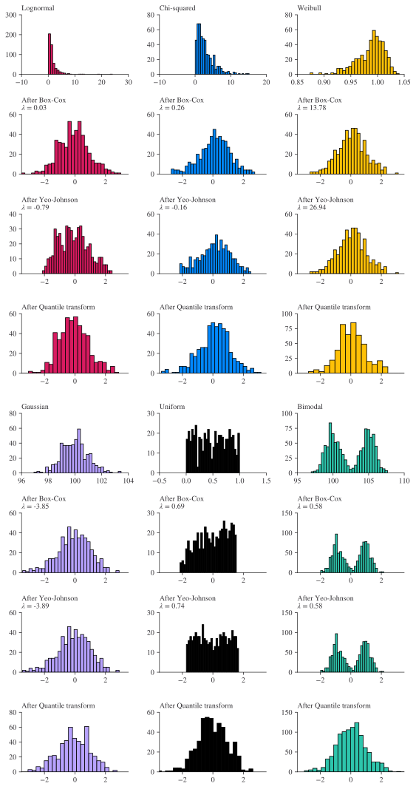

import matplotlib.pyplot as plt
import numpy as np
import pandas as pd
random_state = 42 # We'll use this throughout to make this page reproducible
prng = np.random.default_rng(random_state)Data for Machine Learning
Introduction
In this chapter, we’re going to look at some issues around data for machine learning, and preparing it. This chapter is enormously indebted to the scikit-learn documentation, Chris Albon’s Machine Learning Flashcards, and, an absolute classic, The Elements of Statistical Learning (Hastie et al. 2009).
Time and time again, the reliability of ML models deployed in the real-world depends on the quality of their training data or its preparation, and the quality of your model is typically limited by the quality of your training data. This is less true for tabular data, where the value-add of data prep tends to be lower compared to, say, text or images—but it’s still true to some extent.
In this chapter, we’re going to tackle a few different angles on data including transforming it to be scale free, imputing missing values, thinking about feature engineering, and working with pipelines. Note that we will only be scratching the surface of this very deep and fast-changing topic here!
First, some imports:
Transforms
The context for this section is that some machine learning algorithms are not scale-free, ie what units your measurements in really matters and you will get better or worse results depending on whether you have rescaled your data appropriately. One algorithm that benefits from this is the Support Vector Machine. Scaling and pre-processing can help in different ways, but one key way is by easing convergence (such as with non-penalised logistic regression).
In this section, we’ll also talk about some pitfalls with pre-processing—namely the risk of information leakage.
Of course, machine learning isn’t the only context in which you may want to pre-process your data by rescaling it somehow, and these methods can be used in other scenarios too.
Note that while we focus on the transformations available within scikit-learn, there are many other packages that provide this functionality. feature-engine deserves a special mention.
Standardisation and data leakage
Standardisation is a common requirement for many machine learning estimators. These estimators might not be able to work at peak performance if the individual features do not more or less look like standard, normally distributed data: that is, a Gaussian with zero mean and unit variance.
In practice, we often ignore the shape of the distribution and just transform the data to center it by removing the mean value of each feature, then scale it by dividing non-constant features by their standard deviation. ie
x_t \longrightarrow \frac{x_t - \mu}{\sigma}
scikit-learn provides tools for standardisation. We’ll demonstrate, first creating some fake data with 2 features
X = np.array(
[
[8, 7, 9, 11, 12, 13, 15, 5, 20, 0, 0.43, 16.7],
[0.1, 0.2, 0.3, 0.6, 0.7, 0.8, 0.9, 0.3, 0.7, 0.88, 0.33, 0.22],
]
).T
print("The mean of X is:")
print(X.mean(axis=0).round(3))
print("The std of X is:")
print(X.std(axis=0).round(3))The mean of X is:
[9.761 0.503]
The std of X is:
[5.872 0.277]from sklearn import preprocessing
scaler = preprocessing.StandardScaler().fit(X)
scalerStandardScaler()In a Jupyter environment, please rerun this cell to show the HTML representation or trust the notebook.
On GitHub, the HTML representation is unable to render, please try loading this page with nbviewer.org.
Parameters
| copy | True | |
| with_mean | True | |
| with_std | True |
Remember, everything is an object! We’ve created a scaler object. It has state:
print(scaler.mean_)
print(scaler.scale_)[9.76083333 0.5025 ]
[5.87216947 0.27713189]And we can use it as a function to scale other data. Well, technically, we’re using the transform() method, which is available to scaler objects.
X_scaled = scaler.transform(X)
print("The mean of X is:")
print(X_scaled.mean(axis=0).round(3))
print("The std of X is:")
print(X_scaled.std(axis=0).round(3))The mean of X is:
[-0. -0.]
The std of X is:
[1. 1.]Here we come to an important point: your scaler should only be created from your training data. Why? Because mean and standard deviations are global functions that take information from the entire series. Their definitions are:
\mu = \frac{1}{T} \displaystyle\sum_t x_t
\sigma = \sqrt{\frac{\displaystyle\sum_t(x_t - \mu)^2}{T}}
And series get transformed as x_t \longrightarrow \frac{x_t-\mu}{\sigma}.
So, if you naively use the mean and std from the entire series you are letting information from the test set into your scaling function, and this could enable (erroneously) higher performance. Instead, we want to get the mean, standard deviation, and other properties only including the training set. Let t' denote the training set, which is exclusive of the test set; this is:
\mu = \frac{1}{T'} \displaystyle\sum_{t'} x_{t'}
and so on.
How does this map back into code? Typically, you’ll be doing steps that look like this:
scaler = preprocessing.StandardScaler().fit(X_train)
X_train_scaled = scaler.transform(X_train)
... training ...
X_test_scaled = scaler.transform(X_test)
y_pred_scaled = model.predict(X_test_scaled)Not all pre-processing functions have this problem—it’s only global ones. But they are most pre-processing functions, so you do need to take care.
Minmax scaling and its variants
Another popular scaling approach is to use min-max scaling, usually defined as:
x \longrightarrow \frac{x - \text{max}(x)}{\text{max}(x) - \text{min}(x)} \in (0, 1)
Once again, this is a global scaling, so you want to be careful to only define max and min using training data.
scaler_mm = preprocessing.MinMaxScaler()
X_minmax_scaled = scaler_mm.fit_transform(X)
print(f"The min is {X_minmax_scaled.min():.3f}")
print(f"The max is {X_minmax_scaled.max():.3f}")The min is 0.000
The max is 1.000A variant on minmax scaling is the MaxAbsScaler, which scales each feature by its maximum absolute value. This means it works with negative value too: values are mapped across several ranges depending on whether negative OR positive values are present. If only positive values are present, the range is [0, 1]. If only negative values are present, the range is [-1, 0]. If both negative and positive values are present, the range is [-1, 1].
Note that both the MinMaxScaler() and MaxAbsScaler() are prone to outliers.
Robust Scaler
So what about the situation where you have some outliers? Of course, if they’re truly erroneous you may wish to remove them before you start working with the data (just remember that the test data may have some too!). The other option is to use RobustScaler(). What does “robust” mean here? Basically that the addition or removal of outliers will not significantly change the character of the transformation. In particular, the centering and scaling statistics of RobustScaler() are based on percentiles and are therefore not influenced by a small number of very large marginal outliers. Consequently, the resulting range of the transformed feature values is larger than for the previous scalers. Note that the outliers are retained.
Let’s see an example straight out of the excellent scikit-learn documentation with occupancy and income data for housing.
make_plot(4)
Power Transformations
PowerTransformer() applies a power transformation to each feature to make the data more Gaussian-like in order to stabilise variance and minimise skewness. Currently the Yeo-Johnson and Box-Cox transforms are supported in scikit-learn and the optimal scaling factor is determined via maximum likelihood estimation in both methods (see the Time Series chapter for how to estimate \lambda yourself). By default, PowerTransformer() applies zero-mean, unit variance normalisation. Note that Box-Cox can only be applied to strictly positive data.
The Box-Cox Transform
This transform actually nests power transforms and logarithms, depending on the value of a parameter that is usually denoted \lambda. The transform is given by
y_t' = \begin{cases} \ln(y_t) & \text{if $\lambda=0$}; \\ (y_t^\lambda-1)/\lambda & \text{otherwise}. \end{cases}
The Yeo-Johnson Transform
y_i = \begin{cases} ((y_i + 1)^{\lambda} - 1) / \lambda & \text{if } \lambda \neq 0 \text{ and } y_i \geq 0 \\ -((-y_i + 1)^{2 - \lambda} - 1) / (2 - \lambda) & \text{if } \lambda \neq 2 \text{ and } y_i < 0 \\ \ln(y_i + 1) & \text{if } \lambda = 0 \\ -\ln(-y_i + 1) & \text{if } \lambda = 2 \end{cases}
Comparing transforms
It can be quite confusing to keep track of all of these transforms! To give you a better sense of when to use which transform, take a look at the figure below:
from sklearn.model_selection import train_test_split
from sklearn.preprocessing import PowerTransformer, QuantileTransformer
N_SAMPLES = 1000
FONT_SIZE = 10
BINS = 30
bc = PowerTransformer(method="box-cox")
yj = PowerTransformer(method="yeo-johnson")
# n_quantiles is set to the training set size rather than the default value
# to avoid a warning being raised by this example
qt = QuantileTransformer(
n_quantiles=500, output_distribution="normal", random_state=random_state
)
size = (N_SAMPLES, 1)
# lognormal distribution
X_lognormal = prng.lognormal(size=size)
# chi-squared distribution
df = 3
X_chisq = prng.chisquare(df=df, size=size)
# weibull distribution
a = 50
X_weibull = prng.weibull(a=a, size=size)
# gaussian distribution
loc = 100
X_gaussian = prng.normal(loc=loc, size=size)
# uniform distribution
X_uniform = prng.uniform(low=0, high=1, size=size)
# bimodal distribution
loc_a, loc_b = 100, 105
X_a, X_b = prng.normal(loc=loc_a, size=size), prng.normal(loc=loc_b, size=size)
X_bimodal = np.concatenate([X_a, X_b], axis=0)
# create plots
distributions = [
("Lognormal", X_lognormal),
("Chi-squared", X_chisq),
("Weibull", X_weibull),
("Gaussian", X_gaussian),
("Uniform", X_uniform),
("Bimodal", X_bimodal),
]
colors = ["#D81B60", "#0188FF", "#FFC107", "#B7A2FF", "#000000", "#2EC5AC"]
fig, axes = plt.subplots(nrows=8, ncols=3, figsize=(8, 15))
axes = axes.flatten()
axes_idxs = [
(0, 3, 6, 9),
(1, 4, 7, 10),
(2, 5, 8, 11),
(12, 15, 18, 21),
(13, 16, 19, 22),
(14, 17, 20, 23),
]
axes_list = [(axes[i], axes[j], axes[k], axes[m]) for (i, j, k, m) in axes_idxs]
for distribution, color, axes in zip(distributions, colors, axes_list):
name, X = distribution
X_train, X_test = train_test_split(X, test_size=0.5)
# perform power transforms and quantile transform
X_trans_bc = bc.fit(X_train).transform(X_test)
lmbda_bc = round(bc.lambdas_[0], 2)
X_trans_yj = yj.fit(X_train).transform(X_test)
lmbda_yj = round(yj.lambdas_[0], 2)
X_trans_qt = qt.fit(X_train).transform(X_test)
ax_original, ax_bc, ax_yj, ax_qt = axes
ax_original.hist(X_train, color=color, bins=BINS)
ax_original.set_title(name, fontsize=FONT_SIZE)
ax_original.tick_params(axis="both", which="major", labelsize=FONT_SIZE)
for ax, X_trans, meth_name, lmbda in zip(
(ax_bc, ax_yj, ax_qt),
(X_trans_bc, X_trans_yj, X_trans_qt),
("Box-Cox", "Yeo-Johnson", "Quantile transform"),
(lmbda_bc, lmbda_yj, None),
):
ax.hist(X_trans, color=color, bins=BINS)
title = "After {}".format(meth_name)
if lmbda is not None:
title += "\n$\\lambda$ = {}".format(lmbda)
ax.set_title(title, fontsize=FONT_SIZE)
ax.tick_params(axis="both", which="major", labelsize=FONT_SIZE)
ax.set_xlim([-3.5, 3.5])
plt.tight_layout()
plt.show()
Quantile Transform
QuantileTransformer() applies a non-linear transformation such that the probability density function of each feature will be mapped to a uniform or Gaussian distribution. In this case, all the data, including outliers, will be mapped to a uniform distribution with the range [0, 1], making outliers indistinguishable from inliers. (Remember, RobustScaler() and QuantileTransformer() are robust to outliers in the sense that adding or removing outliers in the training set will yield approximately the same transformation.) A quantile transform smooths out unusual distributions and is less influenced by outliers than scaling methods—it does, however, distort correlations and distances within and across features.
Quantile transformations work by first creating an estimate of the cumulative distribution function of a feature and then using it to map the original values to a uniform or Gaussian distribution. Features values of new or unseen data that fall below or above the fitted range will be mapped to the bounds of the output distribution.
You can see examples of what happens to an input distribution when quantised in the figure above.
Imputing missing values
Rarely do real world data have no issues, and missing values are among the most common of those. You hope that if you do have missing data, that it is missing completely at random, then you have some guarantees that you can still do succesful inference (see {cite:ts}hastie2009elements for a full discussion). If you do have data missing completely at random then you have three options.
The first and most basic is to discard the missing values (delete those rows entirely), but you may be throwing away other, useful data from other columns. Another option is to use an algorithm that is comfortable with missing values (some examples include HDBSCAN for clustering, and the Decision Tree Regressor and Classifier). The third is to impute missing values.
Three popular approaches for imputing missing values are:
- Average Imputation: Replace missing values with the mean or median value of the feature. This is simple and effective.
- Regression Imputation: Predict missing values using regression models based on other correlated features. More accurate but more computationally costly.
- K-Nearest Neighbor Imputation: Predict the missing values by averaging or interpolating using the values of the missing value’s nearest neighbors.
Note that the first and last use the feature only; the second relies on other features too.
The most basic approach, the first, is covered by the SimpleImputer() class in scikit-learn. Missing values can be imputed with a provided constant value, or using the statistics (mean, median or most frequent) of each column in which the missing values are located. This class also allows for different missing values encodings. Here’s an example of using the SimpleImputer() class:
from sklearn.impute import SimpleImputer
imp = SimpleImputer(missing_values=np.nan, strategy="mean")
imp.fit([[1, 2], [np.nan, 3], [7, 6]])
X = [[np.nan, 2], [6, np.nan], [7, 6]]
imp.transform(X)array([[4. , 2. ],
[6. , 3.66666667],
[7. , 6. ]])And here’s an example of the last approach, using K nearest neighbours:
import numpy as np
from sklearn.impute import KNNImputer
nan = np.nan
X = [[1, 2, nan], [3, 4, 3], [nan, 6, 5], [8, 8, 7]]
imputer = KNNImputer(n_neighbors=2, weights="uniform")
imputer.fit_transform(X)array([[1. , 2. , 4. ],
[3. , 4. , 3. ],
[5.5, 6. , 5. ],
[8. , 8. , 7. ]])For more imputation options than scikit-learn, check out feature-engine.
Pipelines
Pipeline are a tool that help you efficiently chain multiple transformations and (in the final step) an estimator into one piece of code logics. This is useful as there is often a fixed sequence of steps in processing the data, for example feature selection, normalisation, and classification. Pipeline serves multiple purposes here:
Convenience and encapsulation: You only have to call fit and predict once on your data to fit a whole sequence of estimators.
Joint parameter selection: You can grid search over parameters of all estimators in the pipeline at once.
Safety: Pipelines help avoid leaking statistics from your test data into the trained model in cross-validation, by ensuring that the same samples are used to train the transformers and predictors.
All of the elements in a pipeline, except the last one, must be transformers (i.e. must have a transform method).
A pipeline can be built using a list of (key, value) pairs, where the key is a string containing the name you want to give a step step and value is a transformation or an estimator:
from sklearn.pipeline import Pipeline
from sklearn.svm import SVC
pipe = Pipeline([("standardise", StandardScaler()), ("svr", SVC(kernel="rbf"))])
pipePipeline(steps=[('standardise', StandardScaler()), ('svr', SVC())])In a Jupyter environment, please rerun this cell to show the HTML representation or trust the notebook. On GitHub, the HTML representation is unable to render, please try loading this page with nbviewer.org.
Parameters
| steps | [('standardise', ...), ('svr', ...)] | |
| transform_input | None | |
| memory | None | |
| verbose | False |
Parameters
| copy | True | |
| with_mean | True | |
| with_std | True |
Parameters
| C | 1.0 | |
| kernel | 'rbf' | |
| degree | 3 | |
| gamma | 'scale' | |
| coef0 | 0.0 | |
| shrinking | True | |
| probability | False | |
| tol | 0.001 | |
| cache_size | 200 | |
| class_weight | None | |
| verbose | False | |
| max_iter | -1 | |
| decision_function_shape | 'ovr' | |
| break_ties | False | |
| random_state | None |
Let’s apply it to some data that are not centered. We’ll use the wine data classification problem. (More info on the wine dataset may be found here.)
from sklearn.datasets import load_wine
X, y = load_wine(return_X_y=True)
X_train, X_test, y_train, y_test = train_test_split(
X, y, test_size=0.33, random_state=random_state
)print(
f"The mean is {X_train.mean():.3f} and the standard deviation {X_train.std():.3f}"
)The mean is 68.815 and the standard deviation 213.626pipe.fit(X_train, y_train)Pipeline(steps=[('standardise', StandardScaler()), ('svr', SVC())])In a Jupyter environment, please rerun this cell to show the HTML representation or trust the notebook. On GitHub, the HTML representation is unable to render, please try loading this page with nbviewer.org.
Parameters
| steps | [('standardise', ...), ('svr', ...)] | |
| transform_input | None | |
| memory | None | |
| verbose | False |
Parameters
| copy | True | |
| with_mean | True | |
| with_std | True |
Parameters
| C | 1.0 | |
| kernel | 'rbf' | |
| degree | 3 | |
| gamma | 'scale' | |
| coef0 | 0.0 | |
| shrinking | True | |
| probability | False | |
| tol | 0.001 | |
| cache_size | 200 | |
| class_weight | None | |
| verbose | False | |
| max_iter | -1 | |
| decision_function_shape | 'ovr' | |
| break_ties | False | |
| random_state | None |
With the scaler and SVR fitted, we can now easily use the fitted pipeline to score on the test set:
print(
f"The accuracy of the pipeline classification is {pipe.score(X_test, y_test):.1%}"
)The accuracy of the pipeline classification is 98.3%Note that this is different to what you’d get if you just trained an SVC and scored it:
fitted_svr = SVC(kernel="rbf").fit(X_train, y_train)
print(
f"The accuracy of the un-standardised classification is {fitted_svr.score(X_test, y_test):.1%}"
)The accuracy of the un-standardised classification is 71.2%Note that if you just want to use default names for the steps in your pipeline, you may use the make_pipeline function instead:
from sklearn.pipeline import make_pipeline
pipe_default_names = make_pipeline(StandardScaler(), SVC(kernel="rbf"))
pipe_default_namesPipeline(steps=[('standardscaler', StandardScaler()), ('svc', SVC())])In a Jupyter environment, please rerun this cell to show the HTML representation or trust the notebook. On GitHub, the HTML representation is unable to render, please try loading this page with nbviewer.org.
Parameters
| steps | [('standardscaler', ...), ('svc', ...)] | |
| transform_input | None | |
| memory | None | |
| verbose | False |
Parameters
| copy | True | |
| with_mean | True | |
| with_std | True |
Parameters
| C | 1.0 | |
| kernel | 'rbf' | |
| degree | 3 | |
| gamma | 'scale' | |
| coef0 | 0.0 | |
| shrinking | True | |
| probability | False | |
| tol | 0.001 | |
| cache_size | 200 | |
| class_weight | None | |
| verbose | False | |
| max_iter | -1 | |
| decision_function_shape | 'ovr' | |
| break_ties | False | |
| random_state | None |
Feature Engineering
Feature engineering or feature extraction or feature discovery is the process of extracting features (usually, columns of data) from raw data to support training a downstream statistical model. To give a really concrete example: imagine you are tasked with building a model that predicts when flight tickets get sold, but your raw data only include the date and time of the flight and the current date: you can imagine that the very first thing you’d do would be to combine these two to create a new feature that is time until the flight actually departs. This is the essence of feature engineering.
Note that, with deep learning, you may not need as much feature engineering as the algorithm will effectively work out how best to combine raw features under the hood.
There are a few popular methods for creating features. Of course you can create features yourself, intelligently, using what you know. Our flights example does just this. But there are more programmatic ways.
One progrommatic way to create features to throw a couple of features together with a bunch of mathematical functions and see what comes out of the other end. Another way that people do this is using a genetic algorithm, for which you should check out the tpot package. Let’s see an example of the former approach using feature-engine. First, some fake data with example features:
import pandas as pd
from feature_engine.creation import MathFeatures
df = pd.DataFrame.from_dict(
{
"Name": ["tom", "nick", "krish", "jack"],
"City": ["London", "Manchester", "Liverpool", "Bristol"],
"Age": [20, 21, 19, 18],
"Marks": [0.9, 0.8, 0.7, 0.6],
"dob": pd.date_range("2020-02-24", periods=4, freq="min"),
}
)
df| Name | City | Age | Marks | dob | |
|---|---|---|---|---|---|
| 0 | tom | London | 20 | 0.9 | 2020-02-24 00:00:00 |
| 1 | nick | Manchester | 21 | 0.8 | 2020-02-24 00:01:00 |
| 2 | krish | Liverpool | 19 | 0.7 | 2020-02-24 00:02:00 |
| 3 | jack | Bristol | 18 | 0.6 | 2020-02-24 00:03:00 |
Now, we use the MathFeatures class to generate a transformer, and then fit_transform() to generate new downstream features:
transformer = MathFeatures(
variables=["Age", "Marks"],
func=["sum", "prod", "min", "max", "std"],
)
df_t = transformer.fit_transform(df)
df_t| Name | City | Age | Marks | dob | sum_Age_Marks | prod_Age_Marks | min_Age_Marks | max_Age_Marks | std_Age_Marks | |
|---|---|---|---|---|---|---|---|---|---|---|
| 0 | tom | London | 20 | 0.9 | 2020-02-24 00:00:00 | 20.9 | 18.0 | 0.9 | 20.0 | 13.505740 |
| 1 | nick | Manchester | 21 | 0.8 | 2020-02-24 00:01:00 | 21.8 | 16.8 | 0.8 | 21.0 | 14.283557 |
| 2 | krish | Liverpool | 19 | 0.7 | 2020-02-24 00:02:00 | 19.7 | 13.3 | 0.7 | 19.0 | 12.940054 |
| 3 | jack | Bristol | 18 | 0.6 | 2020-02-24 00:03:00 | 18.6 | 10.8 | 0.6 | 18.0 | 12.303658 |
Time series features tend to need different types of engineering. Let’s see an example. First, some made up features in time.
ts_series = {
"ambient_temp": [31.31, 31.51, 32.15, 32.39, 32.62, 32.5, 32.52, 32.68],
"irradiation": [0.51, 0.79, 0.65, 0.76, 0.42, 0.49, 0.57, 0.56],
}
ts_series = pd.DataFrame(ts_series)
ts_series.index = pd.date_range("2020-05-15 12:00:00", periods=8, freq="15min")
ts_series.head()| ambient_temp | irradiation | |
|---|---|---|
| 2020-05-15 12:00:00 | 31.31 | 0.51 |
| 2020-05-15 12:15:00 | 31.51 | 0.79 |
| 2020-05-15 12:30:00 | 32.15 | 0.65 |
| 2020-05-15 12:45:00 | 32.39 | 0.76 |
| 2020-05-15 13:00:00 | 32.62 | 0.42 |
Now let’s add some extra features using feature-engineer.
from feature_engine.timeseries.forecasting import WindowFeatures
win_f = WindowFeatures(
window=["30min", "60min"],
functions=["mean", "max", "std"],
freq="15min",
)
ts_series_tr = win_f.fit_transform(ts_series)
ts_series_tr.head()| ambient_temp | irradiation | ambient_temp_window_30min_mean | ambient_temp_window_30min_max | ambient_temp_window_30min_std | irradiation_window_30min_mean | irradiation_window_30min_max | irradiation_window_30min_std | ambient_temp_window_60min_mean | ambient_temp_window_60min_max | ambient_temp_window_60min_std | irradiation_window_60min_mean | irradiation_window_60min_max | irradiation_window_60min_std | |
|---|---|---|---|---|---|---|---|---|---|---|---|---|---|---|
| 2020-05-15 12:00:00 | 31.31 | 0.51 | NaN | NaN | NaN | NaN | NaN | NaN | NaN | NaN | NaN | NaN | NaN | NaN |
| 2020-05-15 12:15:00 | 31.51 | 0.79 | 31.31 | 31.31 | NaN | 0.510 | 0.51 | NaN | 31.310000 | 31.31 | NaN | 0.5100 | 0.51 | NaN |
| 2020-05-15 12:30:00 | 32.15 | 0.65 | 31.41 | 31.51 | 0.141421 | 0.650 | 0.79 | 0.197990 | 31.410000 | 31.51 | 0.141421 | 0.6500 | 0.79 | 0.197990 |
| 2020-05-15 12:45:00 | 32.39 | 0.76 | 31.83 | 32.15 | 0.452548 | 0.720 | 0.79 | 0.098995 | 31.656667 | 32.15 | 0.438786 | 0.6500 | 0.79 | 0.140000 |
| 2020-05-15 13:00:00 | 32.62 | 0.42 | 32.27 | 32.39 | 0.169706 | 0.705 | 0.76 | 0.077782 | 31.840000 | 32.39 | 0.512640 | 0.6775 | 0.79 | 0.126853 |
You can see that we now have a whole load more features constructed from our existing set. And, even better, we have some control over what kinds of aggregations are created, and over what period.
This has just been the tiniest possible introduction to feature engineering. For more, see the feature-engine documentation or the excellent (free) book, the Python Feature Engineering Cookbook (Galli 2022), or the package featuretools. For time series, you might want to check out tsfresh.
Encoding categorical features
In economics and traditional statistics, we normally use the language of “fixed effects” to describe how to enable OLS to deal with categorical variables. In machine learning, the convention is a little different and we talk of “encoding categorical variables”, which is to say turning categories such as ["uses Firefox", "uses Chrome", "uses Safari", "uses Internet Explorer"] into a matrix of integers.
(Note that you can read much more about using categories with pandas in Chapter Categorical Data.)
Existing categories into integer features
There are a couple of popular ways to turn categories into a matrix of integers. One is to use pandas pd.get_dummies() function.
categories = pd.Series(list("abc"))
categories0 a
1 b
2 c
dtype: objectpd.get_dummies(categories, dtype=float) # use dtype bool for true and false| a | b | c | |
|---|---|---|---|
| 0 | 1.0 | 0.0 | 0.0 |
| 1 | 0.0 | 1.0 | 0.0 |
| 2 | 0.0 | 0.0 | 1.0 |
pandas also has the .cat.codes accessor for data of type category.
Another approach is to use the functionality of scikit-learn directly
import numpy as np
from sklearn import preprocessing
enc = preprocessing.OrdinalEncoder()
array_cats = [
["male", "from US", "uses Safari"],
["female", "from Europe", "uses Firefox"],
["male", "from Europe", "uses Opera"],
["male", "from Asia", np.nan],
]
enc.fit_transform(array_cats)array([[ 1., 2., 2.],
[ 0., 1., 0.],
[ 1., 1., 1.],
[ 1., 0., nan]])The OrdinalEncoder() turns each categorical feature into an integer in the range 0 to n_categories - 1. Note that the NaN value has been passed through: you can pass, for example, encoded_missing_value=-1 as a keyword argument to ordinal encoded should you wish to encode NaNs too.
Another two important keyword arguments are min_frequency and max_categories, which, separately, can determine how many categories are created in the obvious ways.
Discretisation of continuous features
We already saw one way to discretise continuous features using pd.cut() and pd.qcut(): you can read more about these in the Chapters on Categorical Data and Data Transformation.
scikit-learn also offers some ways to do this, for example k-bins discretiser. It is used as follows:
data_three_features = np.array([[-3.0, 5.0, 15], [0.0, 6.0, 14], [6.0, 3.0, 11]])
(
preprocessing.KBinsDiscretizer(n_bins=[3, 2, 2], encode="ordinal").fit_transform(
data_three_features
)
)/Users/aet/Documents/git_projects/coding-for-economists/.venv/lib/python3.10/site-packages/sklearn/preprocessing/_discretization.py:296: FutureWarning: The current default behavior, quantile_method='linear', will be changed to quantile_method='averaged_inverted_cdf' in scikit-learn version 1.9 to naturally support sample weight equivalence properties by default. Pass quantile_method='averaged_inverted_cdf' explicitly to silence this warning.
warnings.warn(array([[0., 1., 1.],
[1., 1., 1.],
[2., 0., 0.]])For each feature, the bin edges are computed during fit and, together with the number of bins, they will define the intervals. Use the strategy= keyword argument to choose “uniform”, “quantile”, or “kmeans” as the binning strategy. You can see more in the scikit-learn documentation.